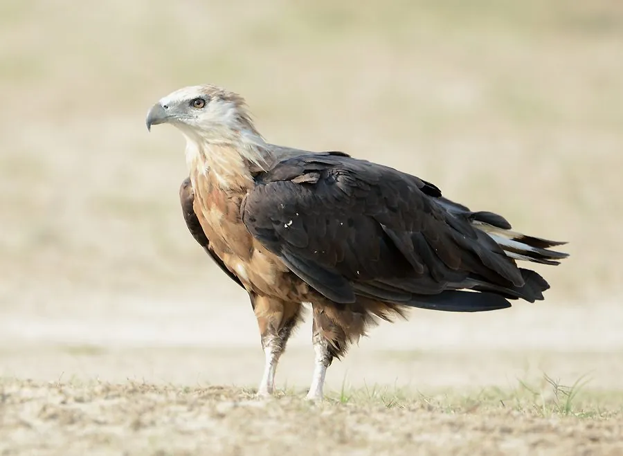

鸟类 · 动物界
玉带海雕 Haliaeetus leucoryphus

中亚至东亚内陆湿地的大型猛禽，尾羽基部有一道白色宽带如束玉带，主食鱼类与水鸟，因湿地萎缩和投毒而全球濒危。
- 分类
- 门脊索动物门纲鸟纲目鹰形目科鹰科属海雕属
- 栖息环境
- 内陆湖泊、大河三角洲、沼泽湿地与水库，巢筑于高大乔木或芦苇丛
- 地理分布
- 中亚、南亚北部、蒙古及中国西部与北部，零星见于缅甸、印度
- 保护级别
- IUCN 濒危（EN）；中国国家一级保护动物；CITES 附录Ⅱ
物种志
玉带海雕体长 70–84 厘米，翼展 1.8–2.2 米，雌鸟明显大于雄鸟，体重 2–3.7 千克。成鸟头部与颈部浅黄褐色，背部深褐，尾羽深褐色而基部有一道宽阔的白色横带，飞翔时宛如腰间束着一条玉带，故得名；腹部栗褐，翼下覆羽深褐，初级飞羽黑色。幼鸟体色较浅，尾无白带，需数年才长成成鸟羽色。
它们是内陆湿地的大型猛禽，繁殖于中亚、南亚北部至中国西部与蒙古的湖泊、河流与沼泽，巢多筑在高大乔木或芦苇丛中的平台上。食性以鱼类为主，也捕食水鸟、啮齿类、蛙和腐肉，常在水面上空盘旋，或站在岸边静候，也会抢夺其他水鸟的猎物。每窝产 2–3 枚卵，孵卵约 40 天。由于湿地排水、渔业竞争、农药与投毒，其全球种群估计仅数千只，且分布区高度碎片化，被列为濒危物种。
形态与习性
- 体长约 70–84 cm，翼展 1.8–2.2 m
- 体重约 2–3.7 kg，雌鸟大于雄鸟
- 食性鱼类为主，兼食水鸟、啮齿类、蛙与腐肉
- 繁殖每窝 2–3 枚卵，孵卵约 40 天
- 识别特征尾羽基部有一道宽阔的白色横带，如束玉带
- 种群现状全球成鸟估计约 2500–10000 只，分布区高度碎片化
- 寿命野外约 20 年
趣味知识
- 玉带海雕尾羽基部有一道白色横带，飞起来像腰上系了条白玉带。
- 它常在水面上空盘旋，看到鱼浮到浅层就俯冲用爪抓取。
- 全球玉带海雕的数量比大熊猫还稀少，主要威胁是湿地消失与投毒。